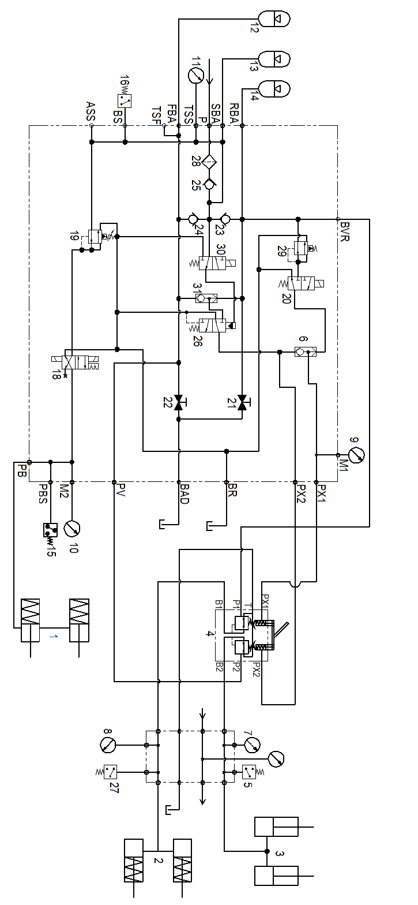
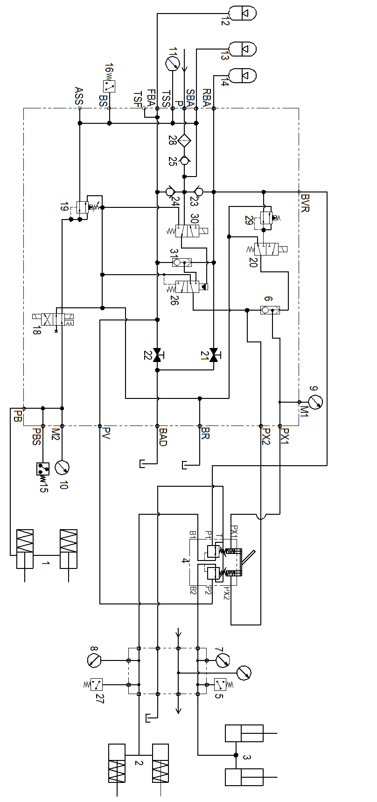
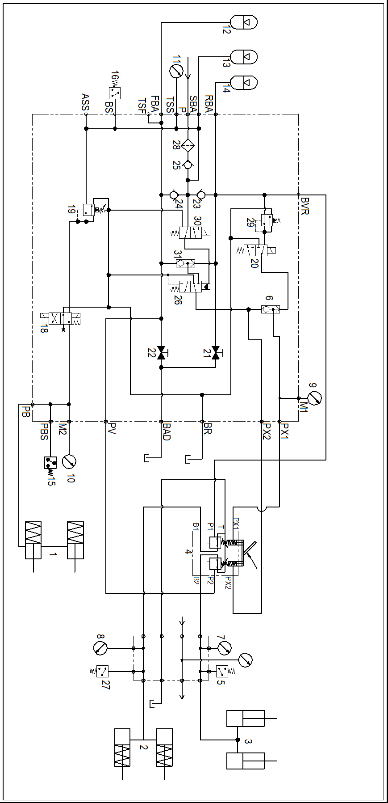
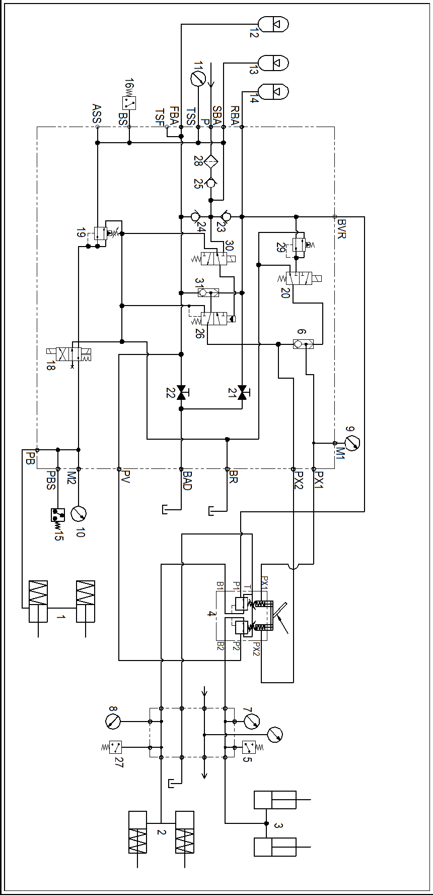

液压制动管路安装 · HYDRAULIC BRAKE LINES MOUNTING
Рис. 1. Неподвижное состояние автомобиля при неработающем двигателеРис. 1. Неподвижное состояние автомобиля при неработающем двигателе
Рис. 1. Неподвижное состояние автомобиля при неработающем двигателе
Рис. 1. Неподвижное состояние автомобиля при неработающем двигателе
Рис. 2. Растормаживание стояночной тормозной системы при работающем двигателеРис. 2. Растормаживание стояночной тормозной системы при работающем двигателе
Рис. 2. Растормаживание стояночной тормозной системы при работающем двигателе
Рис. 2. Растормаживание стояночной тормозной системы при работающем двигателе
Рис. 3. Торможение рабочим тормозом при работающем двигателеРис. 3. Торможение рабочим тормозом при работающем двигателе
Рис. 3. Торможение рабочим тормозом при работающем двигателе
Рис. 3. Торможение рабочим тормозом при работающем двигателе
Рис. 4. Экстренное торможение при работающем двигателеРис. 4. Экстренное торможение при работающем двигателе
Рис. 4. Экстренное торможение при работающем двигателе
Рис. 4. Экстренное торможение при работающем двигателе
Рис. 5. Торможение в загруженном состоянии при работающем двигателеРис. 5. Торможение в загруженном состоянии при работающем двигателе
Рис. 5. Торможение в загруженном состоянии при работающем двигателе
Рис. 5. Торможение в загруженном состоянии при работающем двигателе
Спецификация1Стояночный тормоз12Передний тормозной энергоаккумулятор23Обратный клапан переднего тормозного энергоаккумулятора2Задний тормоз13Тормозной энергоаккумулятор24Обратный клапан заднего тормозного энергоаккумулятора3Передний тормоз14Задний тормозной энергоаккумулятор25Обратный клапан тормозного энергоаккумулятора4Ножной тормозной клапан15Переключатель давления в стояночной тормозной системе26Клапан аварийного экстренного торможения5Передний переключатель тормозного давления16Переключатель низкого давления в тормозной системе27Задний переключатель тормозного давления6Челночный клапан17Запорный клапан стояночного тормоза28Фильтрующая сеть7Манометр переднего тормозного контура18Электромагнитный клапан стояночного тормоза29Редукционный клапан8Манометр заднего тормозного контура19Редукционный клапан30Запорный клапан экстренного торможения9Манометр управляющей магистрали заднего тормозного контура20Электромагнитный клапан торможения в загруженном состоянии31Челночный клапан10Манометр стояночного тормоза21Дренажный клапан переднего тормозного энергоаккумулятора11Манометр энергоаккумулятора22Дренажный клапан заднего тормозного энергоаккумулятораСпецификация1Стояночный тормоз12Передний тормозной энергоаккумулятор23Обратный клапан переднего тормозного энергоаккумулятора2Задний тормоз13Тормозной энергоаккумулятор24Обратный клапан заднего тормозного энергоаккумулятора3Передний тормоз14Задний тормозной энергоаккумулятор25Обратный клапан тормозного энергоаккумулятора4Ножной тормозной клапан15Переключатель давления в стояночной тормозной системе26Клапан аварийного экстренного торможения5Передний переключатель тормозного давления16Переключатель низкого давления в тормозной системе27Задний переключатель тормозного давления6Челночный клапан17Запорный клапан стояночного тормоза28Фильтрующая сеть7Манометр переднего тормозного контура18Электромагнитный клапан стояночного тормоза29Редукционный клапан8Манометр заднего тормозного контура19Редукционный клапан30Запорный клапан экстренного торможения9Манометр управляющей магистрали заднего тормозного контура20Электромагнитный клапан торможения в загруженном состоянии31Челночный клапан10Манометр стояночного тормоза21Дренажный клапан переднего тормозного энергоаккумулятора11Манометр энергоаккумулятора22Дренажный клапан заднего тормозного энергоаккумулятора
Спецификация
1
Стояночный тормоз
12
Передний тормозной энергоаккумулятор
23
Обратный клапан переднего тормозного энергоаккумулятора
2
Задний тормоз
13
Тормозной энергоаккумулятор
24
Обратный клапан заднего тормозного энергоаккумулятора
3
Передний тормоз
14
Задний тормозной энергоаккумулятор
25
Обратный клапан тормозного энергоаккумулятора
4
Ножной тормозной клапан
15
Переключатель давления в стояночной тормозной системе
26
Клапан аварийного экстренного торможения
5
Передний переключатель тормозного давления
16
Переключатель низкого давления в тормозной системе
27
Задний переключатель тормозного давления
6
Челночный клапан
17
Запорный клапан стояночного тормоза
28
Фильтрующая сеть
7
Манометр переднего тормозного контура
18
Электромагнитный клапан стояночного тормоза
29
Редукционный клапан
8
Манометр заднего тормозного контура
19
Редукционный клапан
30
Запорный клапан экстренного торможения
9
Манометр управляющей магистрали заднего тормозного контура
20
Электромагнитный клапан торможения в загруженном состоянии
31
Челночный клапан
10
Манометр стояночного тормоза
21
Дренажный клапан переднего тормозного энергоаккумулятора
11
Манометр энергоаккумулятора
22
Дренажный клапан заднего тормозного энергоаккумулятора
Спецификация
1
Стояночный тормоз
12
Передний тормозной энергоаккумулятор
23
Обратный клапан переднего тормозного энергоаккумулятора
2
Задний тормоз
13
Тормозной энергоаккумулятор
24
Обратный клапан заднего тормозного энергоаккумулятора
3
Передний тормоз
14
Задний тормозной энергоаккумулятор
25
Обратный клапан тормозного энергоаккумулятора
4
Ножной тормозной клапан
15
Переключатель давления в стояночной тормозной системе
26
Клапан аварийного экстренного торможения
5
Передний переключатель тормозного давления
16
Переключатель низкого давления в тормозной системе
27
Задний переключатель тормозного давления
6
Челночный клапан
17
Запорный клапан стояночного тормоза
28
Фильтрующая сеть
7
Манометр переднего тормозного контура
18
Электромагнитный клапан стояночного тормоза
29
Редукционный клапан
8
Манометр заднего тормозного контура
19
Редукционный клапан
30
Запорный клапан экстренного торможения
9
Манометр управляющей магистрали заднего тормозного контура
20
Электромагнитный клапан торможения в загруженном состоянии
31
Челночный клапан
10
Манометр стояночного тормоза
21
Дренажный клапан переднего тормозного энергоаккумулятора
11
Манометр энергоаккумулятора
22
Дренажный клапан заднего тормозного энергоаккумулятора
Описание и расположение
В состав гидравлической тормозной системы входят следующие элементы:
1.Источник подачи гидравлического масла - гидравлическое масло поступает в тормозную систему от насоса и фильтра системы рулевого управления.
2.Блок клапанов управления торможением в сборе - блок клапанов управления торможением в сборе устанавливается в гидравлическом блоке управления на площадке в задней части кабины.
3.Дренажный клапан энергоаккумулятора - он расположен в блоке клапанов управления торможением в сборе, данный клапан служит для сброса гидравлического давления из энергоаккумулятора, управление данным клапаном осуществляется вручную.
ПРИМЕЧАНИЕ: Данный клапан представляет собой клапан дросселирования потока в сборе, сброс давления из энергоаккумулятора требует ручного открытия и закрытия данного клапана.
4.Энергоаккумулятор - устройство поршневого типа, обеспечивающее запасание энергии, оно устанавливается позади гидравлического блока управления на площадке в задней части кабины.
5.Переключатели давления - они служат для контроля давления в системе.
a.Переключатель низкого давления в тормозной системе
c.Переключатель давления в стояночной тормозной системе
6.Ножной тормозной клапан – он устанавливается на передней стенке кабины с внутренней стороны, служит для управления торможением и растормаживание.
7.Тормозные суппорты - суппорты в сборе устанавливается на переднем мосту в сборе и задних колесах.
8.Электромагнитный клапан экстренного торможения - в случае чрезвычайной ситуации, электромагнитный клапан экстренного торможения в блоке клапанов управления торможением приводится в действие при нажатии кнопки экстренного торможения в кабине, чтобы совершить торможение.
9.Электромагнитный клапан торможения в загруженном состоянии - при нажатии кнопки торможения в загруженном состоянии в процессе загрузки или разгрузки подключается клапан торможения в загруженном состоянии в блоке клапанов управления торможением, чтобы совершить торможение.
10.Электромагнитный клапан стояночного тормоза - электромагнитный клапан с двойной катушкой, данный клапан устанавливается в блок клапанов управления торможением в сборе, служит для управления включением и выключением стояночного тормоза.
ПРИМЕЧАНИЕ: Более подробная информация о данном клапане приведена в части 5 - «Гидравлическая система».
11.Запорный клапан стояночного тормоза - после подключения запорного клапана стояночного тормоза давление под давлением поступает в стояночный тормоз через запорный клапан стояночного тормоза, после его отключения отключается подача масла под давлением в стояночный тормоз, но масло может возвращаться из стояночного тормоза в гидробак через запорный клапан стояночного тормоза.
12.Редукционный клапан стояночного тормоза - отдельный вставной гидравлический клапан, он предназначен для ограничения максимально допустимого давления в суппорте стояночного тормоза в сборе.
13.Переключатель торможения в загруженном состоянии - он устанавливается на консоли в кабине, предназначен для управления состоянием электромагнитного клапана торможения в загруженном состоянии.
14.Переключатель стояночного тормоза - он устанавливается на приборной панели кабины, предназначен для управления включением и выключением стояночного тормоза.
15.Стояночный тормоз - отдельный тормозной механизм с суппортом в сборе, он устанавливается на заднем тормозном диске.
Управление (см. рис. от 1 до 5)
Гидравлическая тормозная система состоит из двух подсистем - стояночной и рабочей. Обе части совместно контролируют состояние тормозных суппортов в сборе.
Подача
Гидравлическое масло всасывается насосом рулевого управления в сборе из гидробака. Насос рулевого управления представляет собой регулируемый поршневой насос с компенсатором давления, предназначенным для управления вращающейся наклонной шайбой. В этой конструкции изменение угла наклона наклонной шайбы в пределах от 0 до максимума за каждый оборот вращения вала насоса находится под контролем, это предназначено для обеспечения достаточной подачи потока и поддержания постоянного давления около 3500 фунтов/кв. дюйм (24 130кПа) в энергоаккумуляторе тормозной системы. Масло от насоса проходит через масляный фильтр высокого давления, блок клапанов управления поворотом, блок клапанов управления торможением и поступает в тормозной энергоаккумулятор, энергоаккумулятор должен находиться под давлением с начала до конца. Масло от блока клапанов управления торможением выводит отдельными потоками, которые поступают в передний и задний тормозные энергоаккумуляторы, чтобы осуществлять подачу масла в соответствующие тормозные системы.
ПРИМЕЧАНИЕ: Эти три энергоаккумулятора (приемный, передний и задний энергоаккумуляторы) являются абсолютно независимыми друг от друга, в связи с этим, приемный энергоаккумулятор способен передать энергию переднему и заднему энергоаккумуляторам.
переключатель низкого давления в тормозной системе, если давление в приемном тормозном энергоаккумуляторе падает ниже заданного минимально допустимого значения, то сигнализатор в кабине срабатывает.
Функционирование
При нажатии водителем на педаль тормоза во время работы подается определенное количество масла под давлением, пропорционально степени нажатия педали, масло под давлением поступает в передние и задние тормозные механизмы, чтобы осуществлять торможение автомобиля.
На ножном тормозном клапане устанавливается один бесконтактный переключатель, при нажатии педали тормоза от бесконтактного переключателя выдается сигнал управления миганием задних фонарей стоп-сигналов.
После нажатия кнопки экстренного торможения в кабине подключается электромагнитный клапан экстренного торможения в блоке клапанов, расположенном в гидравлическом блоке управления, масло передается от электромагнитного клапана экстренного торможения к управляющему отверстию ножного тормозного клапана, в этот момент осуществляется одновременное торможение передних и задних колес под действуем масла, передаваемого от ножного тормозного клапана, это играет роль в экстренном торможении, наоборот, после отпускании кнопки экстренного торможения отключается клапан экстренного торможения, давление от управляющего отверстия обратно передается в гидробак, в этот осуществляется одновременное растормаживание передних и задних колес.
ПРИМЕЧАНИЕ:
Давление срабатывания клапана управления тормозами было установлено на заводе-изготовителе, предназначенного для отдельного управления давлением в переднем и заднем тормозных контурах.
Механизм торможения в загруженном состоянии служит для управления срабатыванием и несрабатыванием задних тормозных механизмов. Эта система используется в процессе загрузки и разгрузки, управление осуществляется с помощью кнопки торможения в загруженном состоянии в кабине.
После нажатия кнопки торможения в загруженном состоянии масло под высоким давлением от клапана торможения в загруженном состоянии проходит через челночный клапан, блок клапанов управления торможением и подается к управляющему отверстию ножного тормозного клапана, присоединенному к заднему тормозному контуру. В этот момент масло выходит через выходное отверстие ножного тормозного клапана, присоединенное к заднему тормозному контуру и поступает в задний тормозной суппорт, чтобы осуществлять достаточное торможение заднего тормозного суппорта. Функция торможения в загруженном состоянии будет деактивирована после отпускания кнопки торможения в загруженном состоянии.
При длительной остановке автомобиля с выключенным двигателе или покидании водителем кабины или оставлении карьерного самосвала без присмотра, требуется включение стояночного тормоза для удержания карьерного самосвала в неподвижном состоянии. Суппорт стояночного тормоза оснащен гидромеханическим (пружинно-гидравлическим) приводом.
Во время нормальной работы выключение стояночного тормоза (давление передается на суппорт) осуществляется путем переключения водителем переключателя стояночного тормоза в положение «Расторможено» и удерживания в этом положении не менее 2 секунд осуществляется. При это электромагнитный клапан растормаживания переходит в открытое состояние, позволяет гидравлическому маслу проходить через клапан. В этот момент запорный клапан стояночного тормоза тоже подключается, гидравлическое масло проходит через внутренний обратный клапан и поступает в суппорт в сборе.
ПРИМЕЧАНИЕ:
1.В блок клапанов тормозной системы карьерного самосвала встроен один редукционный клапан стояночного тормоза, предназначенный для снижения давления во всей стояночной тормозной системе.
Масло под давлением от тормозной системы поступает в суппорт стояночного тормоза и заставляет его растормаживать.
2.Переключатель давления играет роль в переключении режимов, управлении погашением индикатора на панели управления.
Включение стояночного тормоза осуществляется путем переключения водителем переключателя стояночного тормоза в положение «Заторможено» и удерживания в этом положении не менее 2 секунд. При этом электромагнитный клапан стояночного тормоза переходит в положение «Заторможено», остаточное масло выходит из системы и поступает в бачок, при перепуске гидравлического масла могут быть совершены следующие действия:
1.Суппорт прижимает колодки.
2.При выдаче сигнала от переключателя давления загорается индикатор на панели управления, информирующий о включении стояночного тормоза.
Если происходит уменьшение количества гидравлического масла в системе (например, повреждение шланга и т.д.) в процессе управления:
1.Запорный клапан стояночного тормоза срабатывает и препятствует пропуску большего количества гидравлического масла в суппорт во избежание утечек.
2.Сигнализатор на панели прибора загорается под действием переключателя давления стояночного тормоза.
Это не влияет на работу моторного тормоза-замедлителя.
Ремонт и регулировка
Периодический ремонт блока клапанов включает следующие виды работ:
1.Проверить все шланги и трубопроводы на наличие повреждений или утечек. Надежно закрепить все шланги и затянуть их в соответствии с порядком, указанным в части 10 - «Дополнения». Отремонтировать или заменить по мере необходимости.
2.Проверить каждый компонент сборочной единицы на наличие следов износа, повреждений или утечек.
3.Проводить функциональные испытания системы в соответствии с порядком проведения испытаний.
Функциональные испытания
ВАЖНО
Перед проведением испытаний требуется правильное прохождение испытаний и регулировки системы рулевого управления.
Действия перед запуском двигателем:
1.Остановить карьерный самосвал в безопасном месте. Кроме использования фрикционной системы торможения, еще нужно надежно удерживать его в неподвижном состоянии другим подходящим методом. Убедиться в отсутствии подкладных клиньев под передние колеса и оборудования и людей в зоне перемещения передних колес при совершении поворота.
2.Полностью сбросить остаточное давление в системе.
3.Убедиться в надежной затяжке всех штуцеров шлангов в соответствии с порядком, указанным в части 10 - «Дополнения».
4.Убедиться в надлежащем уровнем отфильтрованного гидравлического масла в гидробаке карьерного самосвала.
5.Убедиться в нахождении клапана на всасывающем маслопроводе гидронасоса в открытом состоянии.
6.Убедиться в надлежащем давлении предварительного наполнения энергоаккумулятора азотом:
a.Для тормозного энергоаккумлутора (3 шт. небольшой размер) - 950-1050 фунтов/кв. дюйм (6555-7245 кПа).
Следовать указаниям о каждом энергоаккумуляторе, приведенным в части 5 - «Гидравлическая система».
ПРИМЕЧАНИЕ: Перед проверкой давления газа следует полностью сбросить гидравлическое давление в энергоаккумуляторе. Это может осуществляться путем откручивания или отворачивания ручного дренажного клапана в блоке клапанов управления торможением, расположенном в гидравлическом блоке управления на площадке.
7.Убедиться в надлежащей работоспособности приборов, расположенных в гидравлическом блоке управления на площадке.
8.Нормальный уровень масла в гидробаке.
9.Если до этого насос находился в нерабочем состоянии, то следует убедиться в надлежащем заполнении полости насоса рулевого управления маслом.
10.При установке системы электропривода следует принять подходящие меры по прекращению действия системы привода карьерного самосвала, чтобы предотвращать приведение в действие системы привода карьерного самосвала при перемещении рычага селектора в положение «Движение передним ходом» или «Задний ход».
Испытания и регулировка
Функциональные испытания гидравлической тормозной системы производятся в следующем порядке:
Система маслоснабжения энергоаккумулятора:
1.в соответствии с порядком, указанным в части 10 - «Дополнения», снова присоединить все ранее снятые шланги и затянуть их.
2.Проверка давления в системе маслоснабжения тормозного энергоаккумулятора производится в следующем порядке:
a.Подключить главный выключатель.
b.Запустить двигатель и дать ему работать на низких оборотах холостого хода.
c.Значение давления по манометру низкого давления тормозной системы должно быть около 2100 фунтов/кв. дюйм (14480 кПа) .
ПРИМЕЧАНИЕ: Эти испытания являются более простыми, после этого еще будут более подробные окончательные испытания.
d.Убедиться в том, что давление становится стабильно нормальным после постепенного повышения давления подачи энергоаккумулятора до 3450-3550 фунтов/кв. дюйм (23790-24280 кПа).
e.Пусть двигатель работает на низких оборотах холостого хода, несколько раз повторять процедуру нажатия и отпускания педали тормоза.
f.Убедиться в том, что давление подачи масла находится в пределах 3450-3550 фунтов/кв. дюйм (23790-24280 кПа).
g.Записывать значения давления.
Опорожнение рабочей тормозной системы
Удаление воздуха из рабочей тормозной системы производится в следующем порядке:
ПРИМЕЧАНИЕ: Перед опорожнением обратиться к соответствующим схемам сборочной единицы, найти правильный дренажный конец, используемый в процессе установки, обычно это самая высокая точка. Рекомендуется слить гидравлическое масло из тормозного диска и тормозных колодок в емкость через шланг.
1.Пусть двигатель работает на низких оборотах холостого хода, Нажать на педаль тормоза до упора и удерживать в этом состоянии.
2.Убедиться в том, что значение давления по манометру переднего тормозного контура, значение давления не более 2430 фунтов/кв. дюйм (17000 кПа), значение давления по манометру заднего тормозного контура, значение давления не более 2430 фунтов/кв. дюйм (17000 кПа). Если давление превышает предельно допустимые значения, следует немедленно отпустить педаль тормоза. Снова совершить соответствующие действия и повторять данную процедуру.
3.Медленно и осторожно открыть каждый дренажный клапан, пусть гидравлическое масло вытекает до момента исчезновения пузырьков воздуха. После этого закрыть каждый клапан надлежащим образом. Несколько раз повторять данную процедуру для каждого суппорта переднего/заднего рабочего тормоза в сборе.
ВАЖНО
Следует отметить, что при открытии каждого дренажного клапана может быть определенное давление, что приводит к резкому разбрызгиванию гидравлического масла. Желательно медленно и плавно открывать каждый клапан.
4.После завершения данной процедуры отпустить педаль тормоза.
Опорожнение стояночной тормозной системы
Удаление воздуха из стояночной тормозной системы производится в следующем порядке:
ПРИМЕЧАНИЕ: Порядок присоединения шлангов суппортов рабочих тормозов и открытия дренажных клапанов распространяется на суппорт стояночного тормоза.
1.Переключить переключатель стояночного тормоза в положение «Расторможено» и удерживать в этом положении.
2.Освободить каждый стояночный тормоз в сборе в соответствии с порядком, аналогичным порядку управления суппортами рабочих тормозов.
3.Освободить переключатель стояночного тормоза.
4.Переключить переключатель торможения при перегруженном состоянии в положение «Расторможено».
Регулировка системы управления педалью тормоза
Испытания и регулировка педали тормоза производятся в следующем порядке:
1.Нажать на педаль тормоза до упора и удерживать в этом состоянии. Проверить следующие моменты:
a.Давление в переднем тормозном контуре должно быть
2700-2900 фунтов/кв. дюйм (16615-20000 кПа)
b.Давление в заднем тормозном суппорте должно быть
1350-1450 фунтов/кв. дюйм (9450-10150 кПа)
c.Парковочные огни или стоп-сигналы горят.
Задняя часть карьерного самосвала
Верхняя часть кабины (если дополнительный элемент установлен)
2.Отпустить педаль тормоза. Проверить следующие моменты:
a.Давление в переднем/заднем тормозном контуре должно быть доведено до 0 фунтов/кв. дюйм (0 кПа).
b.Стояночные фонари или фонари стоп-сигналов должны быть погашены.
3.Если давление не находится в допустимом диапазоне, слишком высокое или низкое, то отрегулировать согласно сигналам управления переедим/задним тормозным золотниковым клапаном в следующем порядке:
a.Отпустить педаль тормоза.
b.Выключить двигатель карьерного самосвала.
c.Полностью давление в тормозном энергоаккумуляторе с помощью ручного дренажного клапана.
d.Ослабить контргайку и шайбу для крепления U-образного болта к сборочной единице, чтобы снять педаль тормоза с приводом в сборе и палец.
e.Ослабить стопорный винт для крепления регулировочного шплинта к резьбе поршня.
f.Повернуть регулировочный шплинт против часовой стрелки (или к резьбовому концу) для увеличения давления или повернуть его по часовой стрелке (к безрезьбовому концу поршня) для уменьшения давления.
ПРИМЕЧАНИЕ: Для точной регулировки клапанов необходимо поворачивать клапан с инкрементом1/8 оборота.
g.Снова измерить давление тем же методом. Установить палец и использовать плоскую отвертку или подобный предмет в качестве рычага, чтобы нажать на привод до повторной установки педали или кулачка в сборе.
h.Снова затянуть стопорный винт до достижения момента 25-30 фунтов/кв. дюйм (2,8-3,4 Н.м), чтобы зафиксировать шплинт.
i.Снова установить педаль/кулачок в сборе на золотниковый клапан.
j.Повторять вышеуказанные шаги до завершения регулировки.
k.Несколько раз повторять процедуру торможения и растормаживания. Убедиться в отсутствии изменения установочных значений давления. В случае обнаружения изменений значений, повторять вышеуказанную процедуру по мере необходимости.
ПРИМЕЧАНИЕ: Незначительное снижение давления из-за влияния уплотнительных поверхностей компонентов новой или отремонтированной сборочной единицы является нормальным
4.Отпустить педаль тормоза. Проверить следующие моменты:
a.Давление в переднем/заднем тормозном контуре должно быть доведено до 0 фунтов/кв. дюйм (кПа).
b.Стояночные фонари или фонари стоп-сигналов должны быть погашены.
5.Если давление в любом из переднего и заднего контуров системы слишком высокое или низкое, то отрегулировать отдельный золотниковый клапан, касающийся ножного тормозного клапана.
6.Если давление все-таки остается в системе при отпускании педали тормоза, то отрегулировать ограничитель хода педали позади педали в сборе и снова проводить испытания.
7.Записывать конечные значения давления при торможении и растормаживании.
Система сброса давления в тормозной системе
Измерение давления в системе редуцирования давления в возвратной тормозной магистрали:
1.Выключить двигатель.
2.Полностью сбросить давление в гидробаке.
3.Присоединить манометр с диапазоном измерений 0-10 фунтов/кв. дюйм (0-70 кПа) на специальном быстроразъемном штуцере возвратного маслопровода (или подобный прибор) к гидробаку в сборе.
4.Уровень масла в гидробаке находится в нормальном диапазоне.
5.Запустить двигатель. По возможности увеличить частоту вращения двигателя до 1900 об/мин и удерживать в этом состоянии.
6.Значение давления по манометру должно быть 1±0.5 фунтов/кв. дюйм (7±3 кПа).
Если давление не находится в допустимом диапазоне, отрегулировать устройство регулировки расхода до достижения заданного значения.
ПРИМЕЧАНИЕ: Это значение определено при нормальной рабочей температуре масла. Давление масла может изменяться при других температурных условиях.
7.Уменьшить частота вращения двигателя и пусть он работает на низких оборотах холостого хода, затем выключить двигатель.
8.Полностью сбросить давление в гидробаке.
9.Снять манометр низкого давления.
10.Уровень масла в гидробаке находится в нормальном диапазоне.
Испытания системы торможения в загруженном состоянии
Функциональные испытания системы торможения в загруженном состоянии производятся в следующем порядке:
1.Убедиться в том, что педаль тормоза находится в отпущенном состоянии, система экстренного торможения находится в расторможенном состоянии.
2.Переключить переключатель торможения в загруженном состоянии в положение «Заторможено».
3.Проверить следующие моменты:
a.Давление в переднем тормозном контуре должно быть доведено до 0 фунтов/кв. дюйм (0 кПа).
b.Давление в заднем тормозном контуре должно быть доведено до 2400-12450 фунтов/кв. дюйм
c.Индикатор торможения в перегруженном состоянии должен загораться.
4.Переключить переключатель торможения в загруженном состоянии в положение «Расторможено».
5.Проверить следующие моменты:
a.Давление в переднем/заднем тормозном контуре должно быть доведено до 0 фунтов/кв. дюйм (0 кПа).
b.Индикатор торможения в перегруженном состоянии должен быть погашен.
Испытания стояночной тормозной системы
Функциональные испытания стояночной тормозной системы производятся в следующем порядке:
1.Убедиться в нахождении суппорта стояночного тормоза в расторможенном положении, давление в суппорте системы должно быть
2850-2950 фунтов/кв. дюйм (19650-20350 кПа).
2.Если давление в стояночном тормозном системе на находится в данном рабочем диапазоне, блок клапанов самосвала оснащен одноблочным редукционным клапаном, то регулировка производится в следующем порядке:
a.Полностью совершить экстренное торможение или торможение в загруженном состоянии, затем включить стояночный тормоз.
b.Рабочее давление в рабочей системе стояночного тормоза должно быть доведено до 0 фунтов/кв. дюйм (кПа).
c.Ослабить контргайку регулировочного винта редукционного клапана.
d.Повернуть регулировочный винт внутрь (для увеличения давления) или наружу (для уменьшения давления) до получения желаемого значения в соответствии с установленными требованиями.
ПРИМЕЧАНИЕ: Давление увеличивается или уменьшается примерно на 280 фунтов/кв. дюйм (5400 кПа) при каждом повороте регулировочного винта на 1 оборот.
e.Освободить суппорт стояночного тормоза и снова проводить испытания согласно шагу 1.
f.Отрегулировать и снова проводить испытания до получения требуемого значения в системе согласно шагу 2.
g.После завершения испытаний и регулировки зафиксировать регулировочный винт контргайкой.
3.Когда система экстренного торможения, система торможения в загруженном состоянии и педаль тормоза находятся в расторможенном положении, переключить переключатель стояночного тормоза в положение «Заторможено» и удерживать в этом положении не менее 2 секунд, затем отпустить его. Проверить следующие моменты:
a.Суппорт стояночного тормоза должен находиться в расторможенном состоянии.
b.Давление в стояночной тормозной системе должно быть
2850~2950фунтов/кв. Дюйм (19650~20350кПа)
c.Индикатор стояночного тормоза на панели управления должен быть погашен.
4.Полностью совершить торможение в загруженном состоянии.
5.Переключить переключатель стояночного тормоза в положение «Заторможено» и удерживать в этом положении не менее 2 секунд, затем отпустить его. Проверить следующие моменты:
a.Суппорт стояночного тормоза должен прижимать колодки.
b.Давление в стояночной тормозной системе должно быть доведено до 0 фунтов/кв. дюйм (0 кПа).
c.Индикатор стояночного тормоза на панели управления должен загораться.
6.Освободить систему торможения в загруженном состоянии.
7.Переключить переключатель стояночного тормоза в положение «Расторможено» и удерживать в этом положении не менее 2 секунд, затем отпустить его. Проверить следующие моменты:
a. Суппорт стояночного тормоза должен находиться в заторможенном положении.
b.Давление в стояночной тормозной системе должно быть доведено до 0 фунтов/кв. дюйм (0 кПа).
c.Индикатор стояночного тормоза на панели управления должен загораться.
8.Совершить торможение в загруженном состоянии.
9.Переключить переключатель стояночного тормоза в положение «Расторможено» и удерживать в этом положении не менее 2 секунд, затем отпустить его. Проверить следующие моменты:
a.Суппорт стояночного тормоза должен находиться в расторможенном положении.
b.Давление в стояночной тормозной системе должно находиться в диапазоне давления, указанным в шаге 1.
c.Индикатор стояночного тормоза на панели управления должен быть погашен.
10.Выключить двигатель карьерного самосвала.
11.Медленно открыть дренажный клапан суппорта стояночного тормоза с помощью подробного устройство для растормаживания тормозного суппорта. Проверить следующие моменты:
a.Вытекание масла должно постепенно прекратиться после незначительного его вытекания, проверить работоспособность электромагнитного клапана выключения стояночного тормоза.
b.Когда давление в стояночной тормозной системе падает ниже 1450-1550 фунтов/кв. дюйм (10000-10690 кПа), индикатор стояночного тормоза должен загораться.
12.Затянуть дренажный винт суппорта.
13.Записывать давление срабатывания переключателя.
14.Запустить двигатель и пусть он работает на низких оборотах холостого хода. Удалить остаточный воздух из испытанного суппорта.
15.Выключить стояночный тормоз.
16.Выключить двигатель.
Испытания переключателя низкого давления тормозной системы:
Функциональные испытания системы контроля низкого давления в тормозной система производятся в следующем порядке:
1.Повторять процедуру нажатия и отпускания педали тормоза для снижения давления масла в энергоаккумуляторе.
2.Когда значения давления по устройству контроля давления в энергоаккумуляторе уменьшается до 2050-2150 фунтов/кв. дюйм (14135-14825 кПа), убедиться в горении индикатора низкого давления в тормозной системе. Записывать значение давления.
Функциональные испытания ручного дренажного клапана производится в следующем порядке:
1.Проверить давление в энергоаккумуляторе. При неработающем двигателе допускается повторное повышение давления в энергоаккумуляторе.
2.Открутить или открыть дренажный клапан тормозного энергоаккумулятора и удерживать его в этом положении.
3.Проверить давление в энергоаккумуляторе, значение должно быть доведено до нуля.
4.Закрыть или открыть дренажный клапан.
5.Снова запустить двигатель, повторно увеличить давление в энергоаккумуляторе.
6.Повторять шаги от 2 до 5, проводить испытания дренажного клапана переднего тормозного энергоаккумулятора.
Иллюстрации



